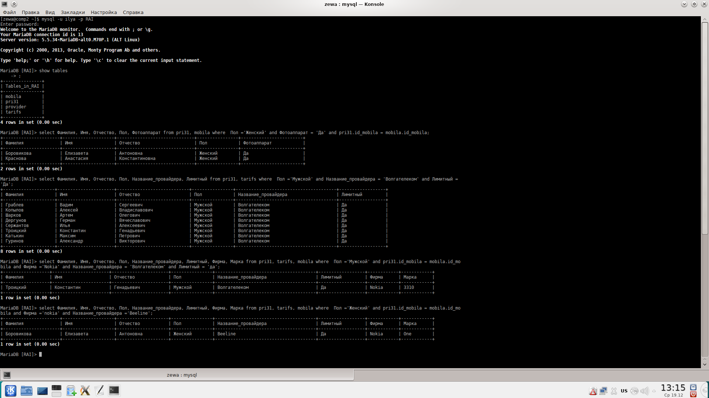

Тема: «Работа с СУБД MySQL — удалённый терминальный доступ»
1. Сначала создаём сервер Базы Данных. То есть, проверяем:
- установлены ли пакеты mysql-server и mysql-client.
2. Как проверить, что сервер mysql запущен и работает. Даём команду:
ps -ax | grep mysqld
3. Обеспечить запуск СУБД при старте ПЭВМ. Как это сделать - смотреть в «Руководстве администратора AltLinux» (www.altlinux.org, http://heap.altlinux.org/issues/modules/init_d/index.html).
4. Настройки на сервере. После установки СУБД (новой установки; если СУБД не вы устанавливали, то возможно пароль пользователя root уже установлен):
– устанавливаем на пользователя root пароль = rootsqladm,
это делается командой
mysqladmin -u root password rootsqladm
5. С другой ЭВМ подключаемся к СУБД созданным пользователем:
mysql -h -u -p
где io — логин созданного пользователя(см. пункт 4),
-p — говорим, что будем вводить пароль,
FIO — база, созданная для данного пользователя
-h — имя (hostname — символическое имя компа) сервера mysql.
6. Далее необходимо создать в базе таблицу moais31. Заполнить таблицу данными о всех студентах учебной группы. Структура таблицы:
«Фамилия, имя, отчество, год рождения, рост, вес, пол»
7. Создать в базе таблицу mobila — данные о мобильных телефонах (ввести не менее 10 марок!). Структура таблицы:
«фирма, марка, ёмкость аккумулятора, время до перезарядки в режиме разговора, наличие диктофона, формат записи диктофона (MP3, WAV, OGG, иной — указать какой), наличие фотоаппарата, разрешение фотоаппарата»;
8. Создать в базе таблицу provider — данные о провайдерах Internet'а Ульяновска, которые могут быть использованы студентами группы. Структура таблицы:
«название провайдера, сайт провайдера».
9. Создать в базе таблицу tarifs — тарифные планы провайдеров Internet'а, которые могут быть использованы студентами группы. Структура таблицы:
«название тарифного плана, провайдер, входящая_скорость, лимитный/безлимитный».
10. Продемонстрировать работу с сервером MySQL. Выполнить запросы:
– «студенты женского пола, имеющие мобильник с фотоаппаратом»;
– «студенты мужского пола, у которых провайдер Волгателеком, тариф лимитный»:
– «студенты мужского пола, у которых мобильник Nokia, а провайдер Волгателеком, тариф безлимитный»;
– «студенты женского пола, имеющие мобильник Samsung, а провайдер Билайн (Корбина)»;
– «студенты мужского пола, у которых мобильник Samsung с фотоаппаратом с разрешением более 2 Мегапикселей, а провайдер Теле-2, тариф безлимитный»;
